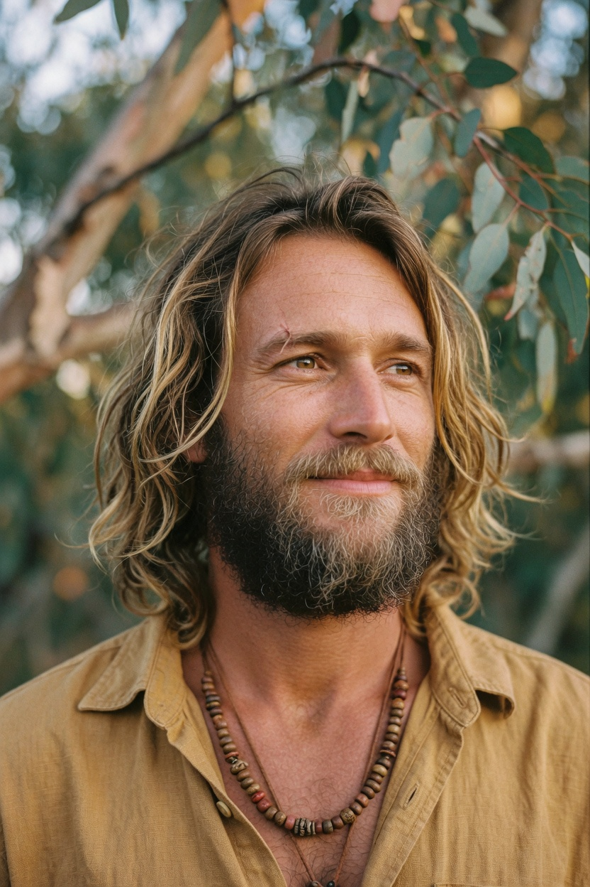

I notice the loop
There is usually a pattern under the complaint. A work story that is a father story. A money worry that is a promise you made at nineteen. Once it has a name, you can stop obeying it by accident.
Services
I have run my own chart and my own body through this work. You get the version I actually live, including the parts that took years.
There is usually a pattern under the complaint. A work story that is a father story. A money worry that is a promise you made at nineteen. Once it has a name, you can stop obeying it by accident.
People borrow my certainty for an hour. If the session is any good, they leave with their own. I will not store it for you.
If I can see the next true version of your week, I will describe it in plain clothes. Bodies tend to start walking toward a picture they recognize.

Training
A body session can pass through family patterns, the five elements, meridian maps, chakras, hormones and nerves, gut ecology, and ordinary anatomy. We go where the check points. We do not tour the whole list to look thorough.
This is education and contemplative bodywork. It is not medicine, and it does not replace a doctor.

$144
An open hour for anything Human Design. I share what wants to come through. You keep the chart.
Read the offer
$480
One sitting. We follow the check through the knot, then you try the new line in real life.
Read the offer
From $1,320
Three sittings or six. Used within a year. The gap between them is part of the work.
Read the offerIf you want someone on the line for a season, mentorship may be the better fit.
About 75 minutes. Sometimes 60, sometimes 90. I do not pad it, and I do not cut you off mid-sentence.
You get a reply with what I need. Birth data if we are using a chart, and a few lines on what you want to look at. Then I tell you when I can meet.
If we have not worked together, expect chart notes within a couple of days and a time within the following week. I will not go quiet. If we already know each other, it moves faster. I know the shape of your field and we skip the warm-up.
Direct, with some laughter. I narrate what I am checking. You can stop me. Tell me the truth you have, not the one that sounds evolved.
The series and the mentorships can be split. Ask in the same note you use to book. Single sessions are paid once.
Email jack@jackinhoff.com. There is no form. Write the way you would write a person.
"Working with him felt like someone taking a quilt of who I am, showing me the stitches, and handing it back warmer."